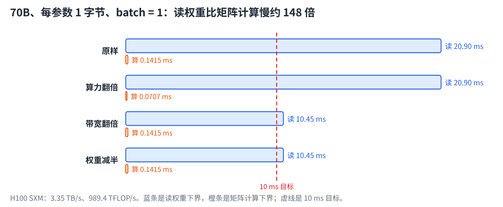
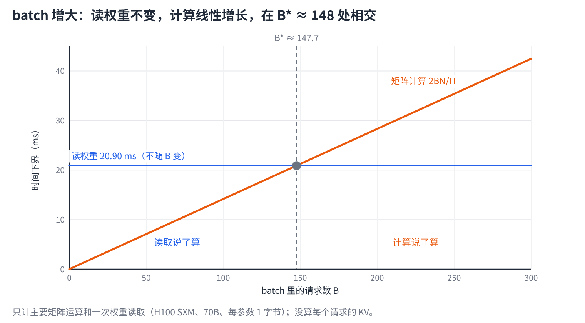
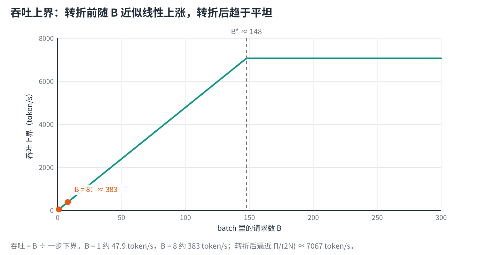
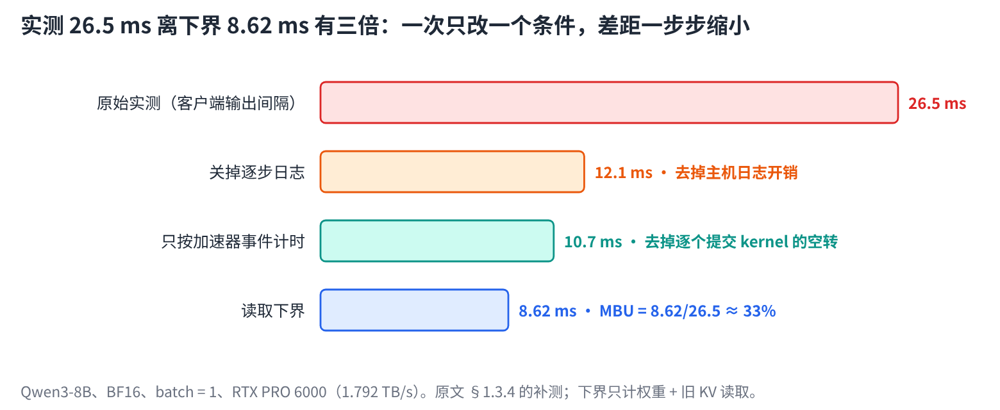
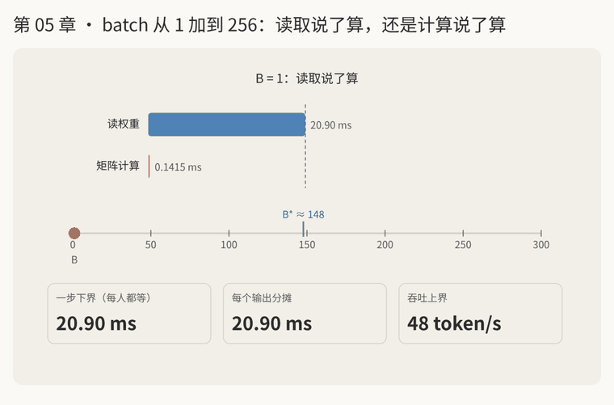

第 05 章 · 用几个数字估算一次模型执行：算和读各要多久，实测为什么达不到
本地运行
git clone https://github.com/wikieden/ai-infra-from-constraints
cd ai-infra-from-constraints/code/notebooks
pip install jupyterlab torch numpy
jupyter lab ch05_estimate.ipynb也可以下载后直接用 VS Code 打开 .ipynb 运行。需要 GPU 的章节在 Colab 里选「代码执行程序 → 更改运行时类型 → GPU」。
本章回答：一张 H100 能不能让 70B 模型 10 ms 生成一个 token？算力翻倍和带宽翻倍，哪个有用？把 8 个请求凑一批，为什么吞吐涨了、每个人的等待却没缩短？实测比算出来的下界慢三倍，差距从哪来？
讲解日期：2026-11-24 · 上一章：第 04 章 系统设计的关键数字 · 下一章：第 06 章 需求如何推动架构
对应原文：materials/ai-infra-book/manuscripts/01-初识 AI Infra.md§1.3 L233–L365（例题 1-1 L237–L267、图 1-8 到 1-12、实测 L331–L355、§1.3.4 L363–L365）
本章缩写：BF16 = Brain Float 16（Google Brain 提出的 / 浮点 / 16 位）· FLOPs = 浮点运算总次数 · FLOP/s = 每秒浮点运算次数 · HBM = High Bandwidth Memory（高 / 带宽 / 内存）· KV = Key-Value（键 / 值）· MBU = Memory Bandwidth Utilization（内存 / 带宽 / 利用率）· PCIe = Peripheral Component Interconnect Express（外设 / 部件 / 互联 / 高速版）· TPOT = Time Per Output Token（每个 / 输出 / token 的时间）。全部缩写见 缩写与术语表
本章就是把第 04 章的 \(T_{\mathrm{compute}} = F/\Pi\) 和 \(T_{\mathrm{memory}} = R/\beta\) 用在一次生成上。全程只用 H100 SXM 的两个数：\(\Pi = 989.4\) TFLOP/s，\(\beta = 3.35\) TB/s（第 04 章速查表）。
讲解
第一步：生成一个 token，要存多少、读多少、算多少（2026-11-24）
类比：一个人翻一本 70 万页的菜谱炒一盘菜。 菜谱一直放在书架上（存储）；每炒一盘都要从头翻一遍（读取）；每一页只看一眼、做一个动作（计算）。
例题 1-1（原文 L237）：一张 H100 SXM，能不能让 DeepSeek-R1-Distill-Llama-70B 在 10 ms 内生成一个新 token？
为了手算，取参数 \(N = 70 \times 10^9\)，每个参数 1 字节（第 04 章的 8 比特方案，读进来再转成 BF16 算）。
公式（原文 L264）：batch 里有 \(B\) 个请求，共用一次读进来的权重：
- \(M_W\)：权重要存多少字节；\(R_W\)：这一步要读多少字节；\(b_W\)：每个权重几字节（这里是 1）。
- \(F\)：这一步的矩阵运算量。每个权重和一个 token 的特征相乘一次、再加到结果里，乘、加各算一次，所以每个请求是 \(2N\)。
- \(M_W = R_W\) 只是这一步碰巧相等：存一份、读一遍。下一步还要再读一遍 \(R_W\)，存的还是那一份。
例子：\(B = 1\)。
| 量 | 算式 | 值 |
|---|---|---|
| 存 \(M_W\) | \(1 \times 70 \times 10^9\) | 70 GB（真实量化方案 73.73 GB，第 04 章已检查过放得下） |
| 读 \(R_W\) | 同上 | 70 GB |
| 算 \(F\) | \(2 \times 1 \times 70 \times 10^9\) | 140 GFLOPs |
一句话：一步生成要读一遍全部权重，算量是 \(2N\) 乘 batch；存、读、算三个数要分开写。
第二步：算要多久，读要多久，谁说了算（2026-11-24）
类比：流水线上一个人搬箱子、一个人拆箱子。 搬一箱要 1 分钟，拆一箱只要 1 秒。拆的人再快，也得等箱子搬过来；一天能拆多少箱，由搬的速度决定。
公式（原文 L274、L284）：
- 用 \(\max\) 而不是相加：数据分块到达，算当前块时可以同时读下一块（读、算充分重叠）。稳定以后，较慢的那项决定速度。
例子（原文 L274–L277）：
| 项 | 算式 | 值 |
|---|---|---|
| 读权重 | \(70\ \mathrm{GB} / 3350\ \mathrm{GB/s}\) | ≈ 20.90 ms |
| 矩阵计算 | \(140\ \mathrm{GFLOPs} / 989400\ \mathrm{GFLOP/s}\) | ≈ 0.1415 ms |
| 比值 | 20.90 / 0.1415 | ≈ 148 倍 |
读比算慢约 148 倍。每读进一个权重只做一次乘加，算的人很快就闲下来等下一块。单是读就要 20.90 ms，光靠这张卡、一个请求，10 ms 做不到。
再试三种改法（原文 L291–L293）：

图 5-1 · 蓝条是读权重的下界，橙条是矩阵计算的下界。算力翻倍只缩短本来就很短的橙条。
| 改法 | 读 | 算 | 下界 |
|---|---|---|---|
| 原样 | 20.90 ms | 0.1415 ms | 20.90 ms |
| 算力翻倍 | 20.90 ms | 0.0707 ms | 20.90 ms（不变） |
| 带宽翻倍 | 10.45 ms | 0.1415 ms | 10.45 ms |
| 权重减半（更低位宽） | 10.45 ms | 0.1415 ms | 10.45 ms |
一句话：读权重比矩阵计算慢约 148 倍，所以单请求 decode 的速度由带宽决定：加带宽或少读数据才有用，加算力没用。
第三步：批内复用：吞吐涨了，等待没缩短（2026-11-24）
类比：校车。 一趟车走一样的路、花一样的时间；拉 1 个学生和拉 8 个学生，路上的时间一样。每个学生分摊的油钱少了（吞吐高了），但每个人在车上的时间一点没少（延迟没缩短）。
例子（原文 L299–L301）：8 个请求一起算，共用一次权重读取。
| 量 | \(B = 1\) | \(B = 8\) |
|---|---|---|
| 读权重 | 70 GB，20.90 ms | 还是 70 GB，20.90 ms |
| 矩阵计算 | 0.1415 ms | 约 8 倍，≈ 1.13 ms |
| 一步的下界 | 20.90 ms | 20.90 ms |
| 每个输出分摊 | 20.90 ms | 20.90 / 8 ≈ 2.61 ms |
| 吞吐 | ≈ 47.9 token/s | ≈ 383 token/s |
| 每个请求等一步 | 20.90 ms | 还是 20.90 ms |
每个输出分摊 2.61 ms 不是任何一个请求的响应时间：每个请求都要等整批算完。
公式：转折点（原文 L307–L313）。\(B\) 一直加，计算时间 \(2BN/\Pi\) 会追上读取时间 \(b_W N/\beta\)：
H100、\(b_W = 1\)：\(B_* = 989.4 \times 10^{12} / (2 \times 3.35 \times 10^{12}) \approx 147.7\)。

图 5-2 · 横轴是 batch 里的请求数 \(B\)。蓝线（读权重）不随 \(B\) 变，橙线（计算）随 \(B\) 线性增长，在约 148 处相交。

图 5-3 · 每批输出数 \(B\) 除以一步的下界。转折点之后，计算时间和输出数一起增长，吞吐不再上涨。
- \(B < B_*\)：读取说了算，多加请求几乎"免费"，吞吐近似按 \(B\) 上涨。
- \(B > B_*\)：计算说了算，整批时间随 \(B\) 增长，吞吐趋于平坦。
- 这个模型只算了权重读取和矩阵运算。真实情况下，一张 H100 放下 73.73 GB 权重后只剩约 6.27 GB，根本放不下 148 个请求的 KV（第 04 章）。
同一件事的另一种说法：算术强度（原文 L325）：
每读一个字节做几次运算。\(I < \Pi/\beta\)（H100 约 295）时读取慢，超过时计算慢。这就是 roofline 模型的出发点，见《CUDA 从线程到 Tensor Core》第 9 章。
场景代码：vLLM 里，一个实例同时处理多少个请求由这两个参数控制，它们决定了实际的 \(B\)：
from vllm import LLM
llm = LLM(
model="deepseek-ai/DeepSeek-R1-Distill-Llama-70B",
quantization="fp8", # 每个权重 1 字节：b_W = 1
max_num_seqs=8, # 一批最多 8 个请求同时 decode：B ≤ 8
gpu_memory_utilization=0.95, # 留多少显存给 KV（第四步的容量限制）
)
一句话：批内复用让一次权重读取服务 \(B\) 个请求，吞吐上涨；但每个请求仍要等整批算完。\(B\) 超过 \(B_* = b_W\Pi/(2\beta)\) 以后，计算接管。
第四步：用实测检验估算（2026-11-24）
类比：按地图估了 30 分钟的路程，实际开了 40 分钟。 估算方向是对的（越远越久），但实际多了红绿灯和堵车。
原文 L333–L345：Qwen3-8B，BF16，RTX PRO 6000 Blackwell Workstation Edition（96 GB，1.792 TB/s，503.8 TFLOP/s），vLLM 0.23 eager 模式（按程序顺序逐个提交工作），每请求输入 2048、输出 256 个 token，每档测三次。
| 并发请求数 | 1 | 64 |
|---|---|---|
| 整批吞吐 | 基准 | 约 31 倍 |
| 每请求输出间隔 TPOT | 约 26.5 ms | 约 40.5 ms |
两个趋势都和第三步一致：吞吐随 batch 上涨，每个人的等待反而变长。但吞吐只涨了 31 倍，不是 64 倍。原因是每个请求还有自己的 KV：权重共用，KV 各读各的。
公式（原文 L352）：把每个请求的状态加进来，
- \(F_1\)：每个请求的运算量；\(R_{\mathrm{state},1}\)：每个请求要读写的状态（主要是 KV）。
- \(B\) 增大，权重读取被分摊，但 KV 读取总量也跟着 \(B\) 涨。
一句话：实测验证了"吞吐随 batch 上涨、延迟变长"的方向；涨得没有 64 倍那么多，是因为每个请求的 KV 读取不能共享。
第五步：实测为什么达不到极限：模型漏了项，还是系统有开销（2026-11-24）
类比：考试估分。 估了 90 分、实际 60 分。要么是估分时漏看了几道题（模型漏项），要么是答题时手慢、涂卡出错（实现开销）。两种原因的改法完全不同。
原文 L365：先按第一性原理算上限，再看实测离上限多远。不知道极限在哪，"比旧版快三成"说明不了什么。
例子：Qwen3-8B、batch = 1（第 02 章的数）。一步 decode 要读主要权重 15.14 GB + 旧 KV 0.302 GB：

图 5-4 · 同一张卡上，每次只改一个条件的补测。大部分差距在主机一侧。
| 测法 | 一步多久 | 差距来自 |
|---|---|---|
| 原始实测（客户端看到的输出间隔） | 26.5 ms | — |
| 关掉逐步日志补测 | 12.1 ms | 客户端日志占用主机时间（系统开销） |
| 只按加速器上的事件计时 | 10.7 ms | eager 模式逐个提交 kernel，经过 Python、驱动和 PCIe，加速器在两次 kernel 之间空转（系统开销） |
| 读取下界 | 8.62 ms | 剩下约两成：模型只算了权重和 KV 读取，没算其他向量运算和采样（模型漏项） |
检查顺序：先问模型有没有漏项（补上，下界上移），再问实现有没有开销（去掉，实测下降）。
五个问题（原文 L361）：整次估算一直在回答——搬什么、搬多少、搬几次、经过哪里、谁在等待。
一句话：下界是硬件的物理极限，下界 ÷ 实测就是利用率；差距不是模型漏了项，就是系统有能去掉的开销，要靠一次只改一个条件的测量来分清。
动画演示：batch 从 1 加到 256，读取说了算还是计算说了算

可交互版：animations/05-estimate.html（滑块：batch 里的请求数 \(B\)，1 到 300；固定 H100 SXM、70B、每参数 1 字节）。
怎么看：
- 蓝条是读权重（20.90 ms，不随 \(B\) 变），橙条是矩阵计算（随 \(B\) 变长），对应第二、三步；
- 一步的下界取两者中较长的；转折点 \(B_* \approx 148\) 处两条一样长；
- 下面三个数：一步下界（每个请求都要等这么久）、每个输出分摊、吞吐上界；
- 播放时 \(B\) = 1 → 8 → 32 → 148 → 256：转折前吞吐近似按 \(B\) 涨，转折后不再涨。
练习与作答记录
题 1（第一、二步）：同样的 70B 模型、每参数 1 字节，换成 A100 80GB SXM（第 04 章速查表：2.039 TB/s，312 TFLOP/s），batch = 1。读权重和矩阵计算的下界各是多少？哪项说了算？10 ms 做得到吗？
作答记录：（待作答）
题 2（第三步）：在 A100 上，\(b_W = 1\) 时的转折点 \(B_*\) 是多少？和 H100 的 148 比，大还是小？为什么？
作答记录：（待作答）
题 3（第三、五步）：一个同事说"我们把 batch 从 1 调到 32，吞吐涨了 20 倍，所以用户等待时间降了 20 倍"。错在哪？要同时报告哪两个指标？
作答记录：（待作答）
原书练习 1-3（原文 L327–L329：带宽、算力打折以后，\(B = 1, 16, 64\) 的执行时间和吞吐）和练习 1-4（原文 L357–L359：用实测吞吐和 TPOT 检验批处理模型）。想多练可以做。
口诀
存读算，分三算；读比算慢百来番；
加算力，白费钱；加带宽、少读数，才见效；
一车拉八人，油钱分摊路不短；
先算极限再看差，漏项开销分开查。
本章复习卡片
I14（单步的存、读、算）、I15（\(\max\) 下界与谁说了算）、I16（批内复用与转折点 \(B_*\)）、I17（实测差距的两种来源）、I18（五个问题）。练习做完后，按答错、卡住的地方再补。
附录 · 延伸阅读
留给以后深入学习用，不影响本章主线。★ 是建议先读的。
推荐阅读
| 读什么 | 读哪里 | 读它为了什么 |
|---|---|---|
| ★ AII 第 1 章 | §1.3 L233–L365 | 本章原文，图 1-8 到 1-14 |
| ★ AII 第 1 章"本章数字速查" | L456–L472 | Qwen3-8B 的 prefill / decode 运算量、读取量和 8.62 ms 下界的来历 |
| AII 第 1 章脚注 | L480（[^budget]）、L484（[^followup]）、L486（[^measurement]） |
70B 预算复算、补测记录、实测说明 |
| ★ 《CUDA 从线程到 Tensor Core》第 9 章 | 全章 | roofline：算术强度和 \(\Pi/\beta\) 的比较 |
| Williams、Waterman、Patterson，Roofline 论文 | 全文 | roofline 模型的原始出处（原文 L482 脚注） |
| AII 第 8 章 | 推理优化 | 批处理、KV 管理、推测解码，第三、四步的后续 |
数学原理
- 重叠取最大：两件事能同时进行时，总时间由慢的那件决定，\(\max(a, b)\)；不能重叠时才相加，\(a + b\)。
- 分摊：整批时间 ÷ 输出数 = 每个输出分摊的时间。它是吞吐的倒数，不是延迟。
- 转折点：令两条线相等解出 \(B_*\)。\(B_*\) 和 \(N\) 无关，只取决于 \(b_W\) 和硬件的 \(\Pi/\beta\)。
公式清单
| 公式 | 意思 |
|---|---|
| \(M_W = b_W N\)，\(R_W = b_W N\)，\(F \approx 2BN\) | 单步存、读、算 |
| \(T_{\mathrm{step}} \ge \max(F/\Pi,\ R_W/\beta)\) | 读、算充分重叠时的下界 |
| 每输出分摊 \(= T_{\mathrm{step}} / B\)；吞吐 \(= B / T_{\mathrm{step}}\) | 批内复用 |
| \(B_* = b_W \Pi / (2\beta)\) | 计算追上读取的 batch |
| \(I = F / R_W = 2B / b_W\) | 算术强度；和 \(\Pi/\beta\) 比 |
| \(T_{\mathrm{step}} \approx \max(BF_1/\Pi,\ (R_W + B R_{\mathrm{state},1})/\beta)\) | 加上每请求状态 |
| \(\mathrm{MBU} = T_{\mathrm{lower}} / T\) | 读取下界 ÷ 实测 |
代码对照：把本章的数字用代码算一遍
纯 Python，不需要 GPU。代码在仓库本地
ai-infra/solutions/chapter-code/ch05_estimate.py，配套测试tests/test_ch05.py：
bash cd ai-infra/solutions/chapter-code uv run python ch05_estimate.py # 一步一步打印 uv run pytest tests/test_ch05.py
讲义 ↔ 代码：
| 讲义 | 公式 | 写法 | 跑出来 |
|---|---|---|---|
| 第一步 存、读、算 | \(b_W N\)，\(2BN\) | step_bounds(1) |
70 GB、140 GFLOPs |
| 第二步 两个下界 | \(R/\beta\)，\(F/\Pi\) | step_bounds(1) |
20.90 ms、0.1415 ms，约 148 倍 |
| 第二步 三种改法 | 改 \(\Pi\)、\(\beta\)、\(b_W\) | step_bounds(1, pi=…, beta=…, bw=…) |
20.90、10.45、10.45 ms |
| 第三步 \(B = 8\) | 分摊与吞吐 | batch_view(8) |
1.13 ms，2.61 ms / 输出，383 token/s |
| 第三步 转折点 | \(b_W\Pi/(2\beta)\) | b_star() |
147.7 |
| 第五步 Qwen3-8B 下界与 MBU | \((15.14 + 0.302)/1.792\) | qwen_lower_ms()、mbu(26.5) |
8.62 ms、33% |
关键几行：
def step_bounds(B, n=70e9, bw=1, pi=989.4e12, beta=3.35e12):
read_ms = bw * n / beta * 1e3 # 读一遍权重，和 B 无关
compute_ms = 2 * B * n / pi * 1e3 # 每个请求 2N 次运算
return read_ms, compute_ms, max(read_ms, compute_ms) # 充分重叠：取较大者
代码里才看得到的 3 件事：
- 吞吐用
B / lower_ms * 1e3，单位是 token/s；把毫秒忘了乘 1000，会差三个数量级。 - 原文的 47.9 和 383 token/s 是由 20.90 ms 算的；用不四舍五入的 20.896 ms 算出来是 47.86 和 382.9，测试里放宽到一位小数。
b_star()里 \(N\) 被约掉了：同一张卡上，7B 和 70B 的转折点一样，都只看 \(b_W\) 和 \(\Pi/\beta\)。
自己改一改（不影响练习答案）：
- 把
step_bounds的bw改成 2（BF16），看读取下界和b_star()怎么变。 - 用
batch_view(B)扫 \(B\) = 1、64、128、256、512，画出吞吐曲线，和图 5-3 比。 - 把
mbu的实测时间换成 12.1 和 10.7，看利用率怎么一步步上升。